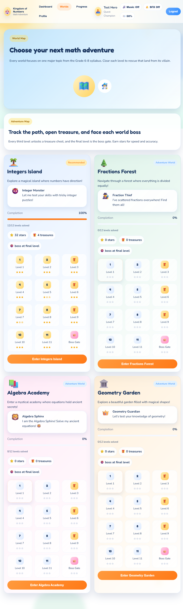
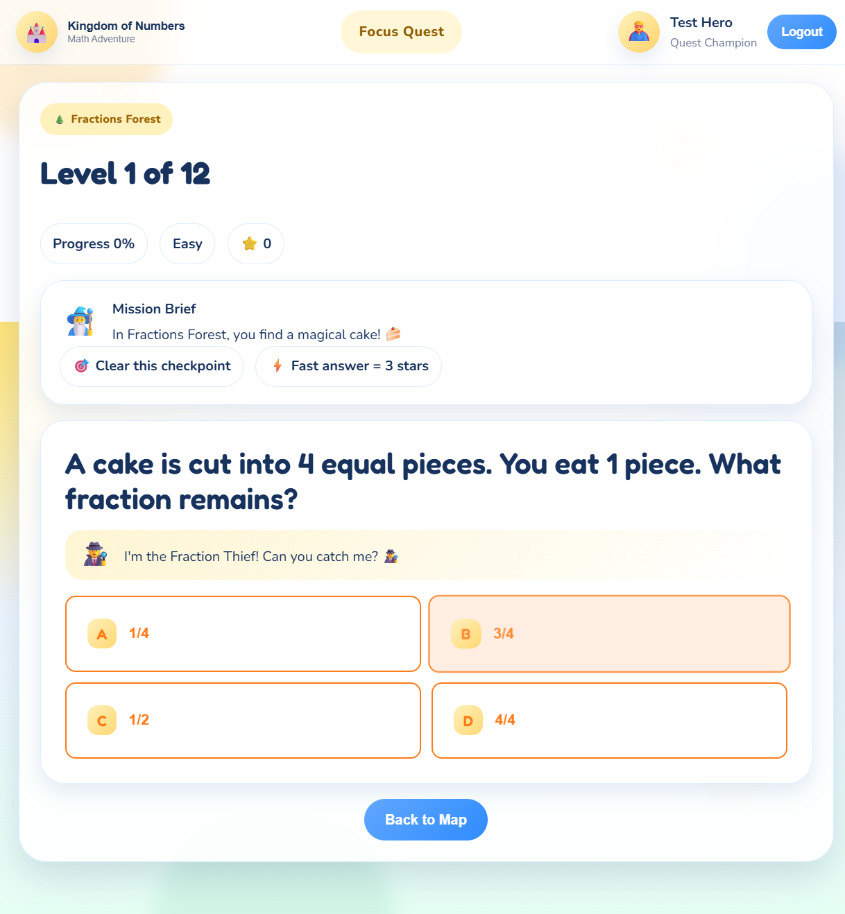
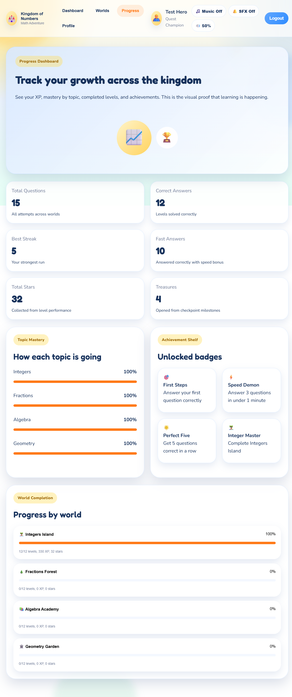

1
Sign In
Create an account or continue where you left off.
A clean, story-based math learning app for Grade 6-8 students
Create an account or continue where you left off.
Answer 10 questions from key math topics.
Get a suggested world order based on weak areas.
Solve short story-based levels with instant feedback.
See progress, XP, stars, and achievements.

Number line thinking, gains, losses, and signed operations.
Fractions, decimals, percentages, and fair sharing.
Expressions, patterns, and simple equations.
Shapes, angles, perimeter, area, and measurement.


The Kingdom of Numbers turns math practice into a guided adventure that is simple to follow, fun to use, and still clearly connected to real learning goals.